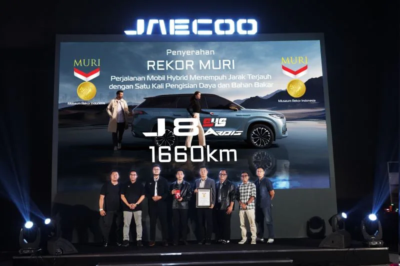

Puncak rekayasa hybrid — memadukan efisiensi bahan bakar luar biasa dengan performa mendebarkan, terbukti dengan Rekor MURI.

SHS adalah teknologi hybrid generasi berikutnya milik JAECOO, memadukan mesin pembakaran bertenaga tinggi dengan motor listrik canggih untuk pengalaman berkendara tak tertandingi.
Mesin pembakaran dan motor listrik bekerja secara harmonis, beralih otomatis berdasarkan kondisi berkendara untuk memaksimalkan efisiensi dan performa.
Sistem manajemen energi berbasis AI terus menganalisis pola berkendara dan kondisi jalan untuk mengoptimalkan distribusi tenaga secara real time.
Setiap kali Anda mengerem, energi kinetik dikonversi kembali menjadi energi listrik untuk mengisi ulang baterai — memaksimalkan setiap tetes bahan bakar.
Mode listrik murni untuk berkendara di kota. Nol emisi, senyap, efisiensi maksimal.
Peralihan otomatis antara motor listrik dan mesin pembakaran untuk keseimbangan optimal antara tenaga dan efisiensi.
Mesin dan motor listrik digabungkan untuk output tenaga maksimal — 0-100 km/jam dalam waktu kurang dari 7 detik.
ARDIS (Advanced Road Dynamic Intelligent System) adalah sistem berkendara cerdas segala medan milik JAECOO — hanya tersedia di JAECOO J8 SHS ARDIS.
Pasir, lumpur, salju, batu, rumput, sport, dan standar. ARDIS secara otomatis menyesuaikan traksi, distribusi torsi, dan suspensi untuk setiap medan.
Torsi didistribusikan secara cerdas ke 4 roda secara real time, memaksimalkan cengkeraman di permukaan jalan apapun tanpa perlu input pengemudi.
ARDIS terintegrasi dengan ABS, ESC, HDC, dan rangkaian sistem bantuan pengemudi JAECOO untuk keselamatan komprehensif di segala medan.
Pesan test drive dan rasakan langsung kecanggihan Super Hybrid System.
Super Hybrid System (SHS) adalah teknologi penggerak hybrid revolusioner yang dikembangkan JAECOO untuk menghadirkan efisiensi bahan bakar tertinggi sekaligus performa berkendara yang mengesankan. SHS menggabungkan mesin bensin turbo berkapasitas 1,5 liter dengan dua motor listrik bertenaga tinggi dalam sebuah sistem terintegrasi yang cerdas. Hasil kolaborasi ketiga sumber tenaga ini adalah daya total sistem yang mencapai 475 HP — setara SUV bermesin V8 konvensional — namun dengan konsumsi bahan bakar yang jauh lebih hemat.
Otak dari SHS adalah Electronic Control Unit (ECU) generasi terbaru yang secara konstan memantau kondisi berkendara, tingkat muatan baterai, kecepatan kendaraan, dan permintaan tenaga dari pengemudi. Berdasarkan data ini, ECU secara otomatis memilih mode operasi paling efisien: apakah hanya menggunakan motor listrik saat kondisi lalu lintas lambat, atau mengkombinasikan keduanya saat membutuhkan akselerasi penuh di jalan tol.
Salah satu keunggulan utama SHS adalah kemampuan regenerative braking yang sangat efisien. Setiap kali pengemudi menginjak rem atau melepas pedal gas, energi kinetik kendaraan yang biasanya terbuang sebagai panas dikonversi kembali menjadi energi listrik dan disimpan di baterai. Di kondisi lalu lintas kota Jakarta yang padat dengan banyak pengereman, sistem ini dapat menghemat konsumsi bahan bakar secara signifikan.
Pengemudi JAECOO J8 SHS akan merasakan manfaat nyata teknologi ini dalam kehidupan sehari-hari. Saat terjebak kemacetan di jalan Sudirman atau Gatot Subroto, kendaraan secara otomatis beralih ke mode EV sehingga tidak ada bahan bakar yang terbuang dan emisi gas buang nol. Ketika keluar dari kemacetan dan membutuhkan akselerasi untuk menyalip, SHS langsung mengaktifkan tenaga penuh gabungan mesin dan motor listrik untuk respons instan yang memuaskan.
Konsumsi bahan bakar JAECOO J8 dengan SHS di kondisi jalan campuran kota-tol mencapai angka yang sangat efisien untuk kelas SUV besar berkapasitas 7 penumpang. Dibandingkan SUV sejenis bermesin konvensional, pengguna SHS dapat menghemat biaya BBM yang signifikan setiap bulannya, menjadikan investasi pada kendaraan hybrid SHS sangat menguntungkan dalam jangka panjang.
Adaptive Rear Drive Intelligent System (ARDIS) adalah sistem penggerak cerdas yang menjadi keunggulan eksklusif JAECOO J8. Berbeda dengan sistem AWD konvensional yang mendistribusikan torsi secara mekanis, ARDIS menggunakan motor listrik terpisah di poros roda belakang yang dapat dikendalikan secara independen oleh komputer. Ini memungkinkan distribusi torsi yang jauh lebih presisi dan responsif dibandingkan sistem AWD mekanis manapun.
ARDIS memantau lebih dari 100 parameter berkendara setiap detiknya, termasuk kecepatan, sudut kemudi, kondisi jalan, distribusi beban, dan status selip setiap roda secara individual. Berdasarkan analisis real-time ini, ARDIS dapat memindahkan torsi dari roda yang selip ke roda yang memiliki traksi lebih baik dalam waktu kurang dari 10 milidetik — jauh lebih cepat dari reaksi manusia manapun.
Dalam kondisi berkendara normal di jalan aspal kering, ARDIS mengoptimalkan distribusi torsi untuk efisiensi bahan bakar terbaik. Saat mendeteksi kondisi jalan licin akibat hujan atau memasuki jalan tanah, ARDIS secara proaktif mengaktifkan mode AWD sebelum pengemudi bahkan menyadari ada perubahan kondisi jalan. Kemampuan antisipasi ini menjadikan ARDIS lebih unggul dari sistem AWD reaktif konvensional.
Keajaiban sesungguhnya dari JAECOO J8 adalah sinergi antara SHS dan ARDIS yang bekerja secara terintegrasi. Saat berkendara di jalan tol dalam keadaan basah, SHS menyediakan tenaga optimal sementara ARDIS memastikan setiap watt tenaga tersebut tersalurkan ke permukaan jalan dengan traksi maksimal. Hasilnya adalah SUV 7 penumpang yang tidak hanya bertenaga besar, tetapi juga aman, efisien, dan mudah dikendalikan dalam segala kondisi cuaca dan medan.
Di Showroom JAECOO Jakarta Selatan, tim teknisi kami siap mendemonstrasikan cara kerja SHS dan ARDIS secara langsung selama sesi test drive. Anda akan merasakan sendiri bagaimana kedua teknologi ini bekerja mulus untuk memberikan pengalaman berkendara yang luar biasa. Jadwalkan test drive J8 SHS ARDIS Anda hari ini dan rasakan masa depan teknologi otomotif.